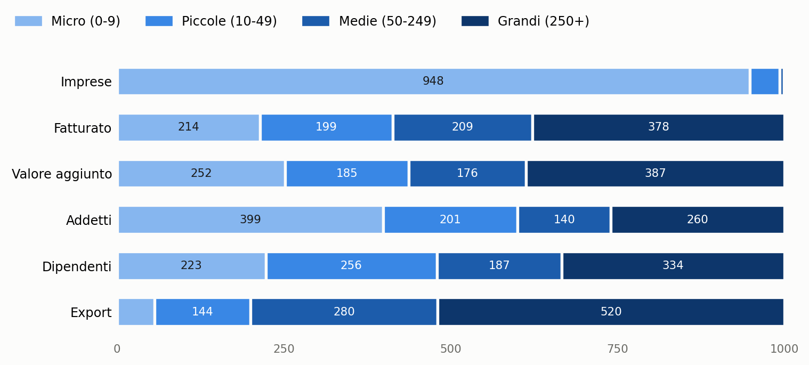
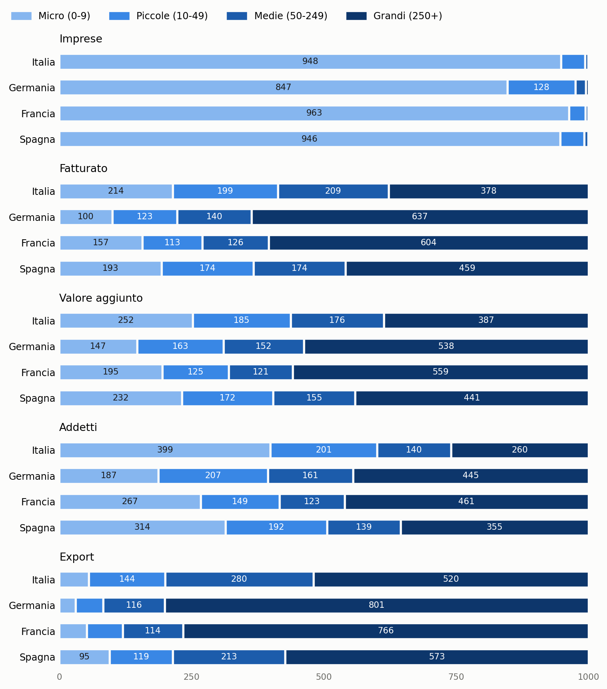
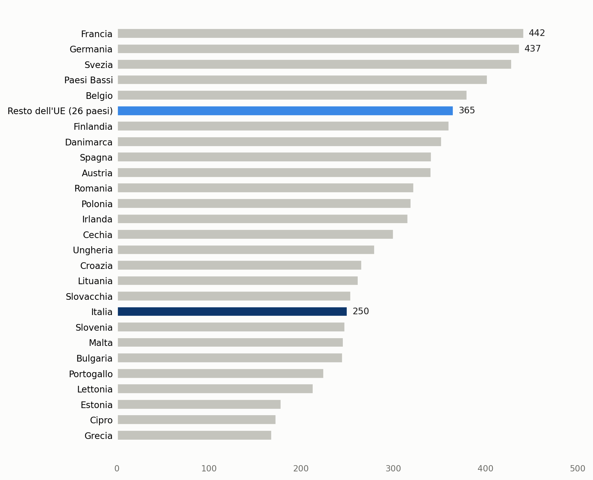
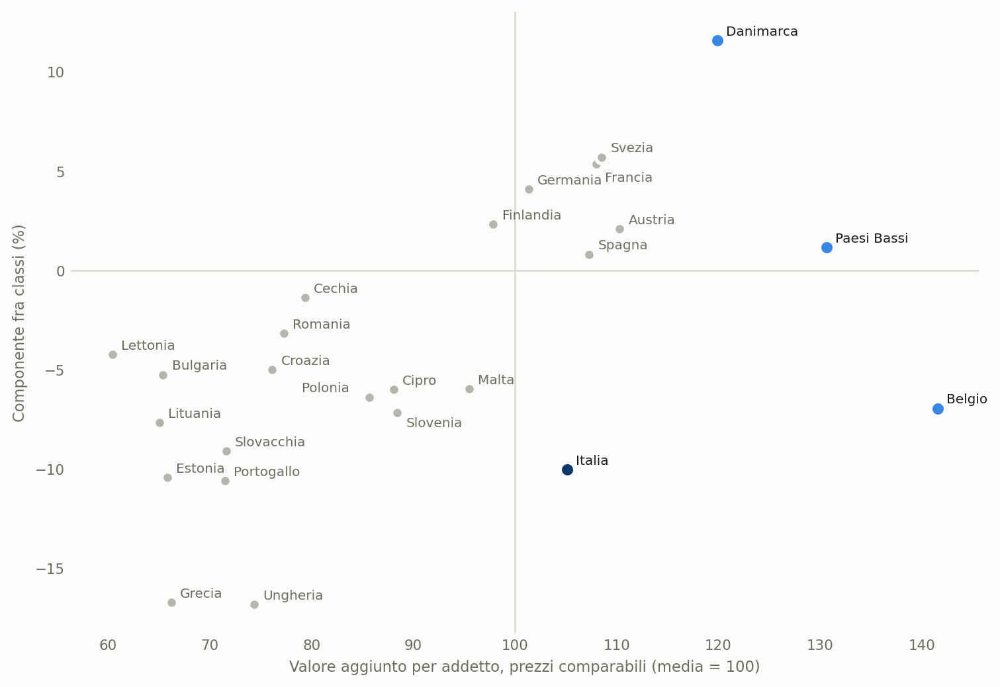

Quanto pesano micro, piccole, medie e grandi imprese
Italia e Unione europea, 2021-2024: il divario italiano è nella dimensione delle imprese, non nei settori
Paolo Volterra ![]()
Italiano. Il documento misura, per Italia, Germania, Francia e Spagna nel 2024, quanta parte di imprese, fatturato, valore aggiunto, addetti, dipendenti ed export di beni fa capo a ciascuna classe dimensionale (micro, piccole, medie e grandi imprese), esprimendo ogni grandezza in millesimi del totale nazionale. In Italia le microimprese sono il 95% delle imprese e occupano circa quattro addetti su dieci, contro meno di due in Germania; le grandi imprese occupano un quarto degli addetti, contro oltre il 44% in Germania e Francia, e realizzano poco più di metà dell’export di beni, contro circa otto decimi in Germania. Una scomposizione esatta su 17 sezioni e su oltre 70 divisioni di attività mostra che il divario si osserva dentro i singoli settori: la diversa composizione settoriale ne spiega al massimo circa un quinto nel confronto con Germania e Francia. Il risultato si ripete nel confronto con gli altri paesi dell’Unione europea, dove l’Italia ha una delle quote di addetti nelle grandi imprese più basse, e resta stabile dal 2021 al 2024. Poiché in Italia il valore aggiunto per addetto delle grandi imprese è circa il doppio di quello delle microimprese, la sola ripartizione degli addetti fra le classi, a parità di settori e di produttività di ciascuna classe, abbassa il valore aggiunto medio per addetto: con la ripartizione tedesca sarebbe più alto di circa un sesto. Una graduatoria dei paesi sul livello della produttività e sulla sua componente fra le classi dimensionali colloca l’Italia nella prima metà per valore aggiunto per addetto a prezzi comparabili ma fra gli ultimi per allocazione del lavoro fra le classi; Belgio, Danimarca e Paesi Bassi non sono superati da nessun altro paese in entrambe le misure. Le quote sono calcolate dalle statistiche strutturali sulle imprese e dalle statistiche del commercio estero per caratteristiche d’impresa di Eurostat, e dai conti economici delle imprese dell’Istat per i dipendenti italiani.
English. The paper measures, for Italy, Germany, France and Spain in 2024, how much of the number of enterprises, turnover, value added, persons employed, employees and goods exports is accounted for by each size class (micro, small, medium-sized and large enterprises), expressing each variable in thousandths of the national total. In Italy micro enterprises are 95% of all enterprises and employ about four persons out of ten, against fewer than two in Germany; large enterprises employ a quarter of persons employed, against over 44% in Germany and France, and account for just over half of goods exports, against about eight tenths in Germany. An exact decomposition over 17 sections and more than 70 divisions of economic activity shows that the gap arises within individual sectors: differences in sector composition explain at most about one fifth of it in the comparison with Germany and France. The result holds in the comparison with the other European Union countries, among which Italy has one of the lowest shares of persons employed in large enterprises, and it is stable from 2021 to 2024. Since in Italy value added per person employed in large enterprises is about twice that of micro enterprises, the allocation of persons employed across size classes alone, holding sectors and the productivity of each class fixed, lowers average value added per person employed: with the German allocation it would be about one sixth higher. A ranking of countries by the level of productivity and its between-class component places Italy in the top half for value added per person employed at comparable prices but among the last for the allocation of labour across size classes; Belgium, Denmark and the Netherlands are not outperformed by any other country on both measures. The shares are computed from Eurostat structural business statistics and trade by enterprise characteristics, and from Istat enterprise accounts for Italian employees.
dimensione d’impresa, microimprese, grandi imprese, produttività, statistiche strutturali sulle imprese, export, Italia, Unione europea, Germania, Francia, Spagna
Versione citabile su Zenodo, con il PDF in italiano e in inglese: doi.org/10.5281/zenodo.24104042.
1 Introduzione
Si dice spesso che l’Italia è un paese di micro, piccole e medie imprese. La frase descrive un tratto noto dell’economia italiana, che le analisi internazionali documentano da tempo: l’OCSE, già nel 2020, osservava che in Francia, Finlandia e Germania la quota più alta dell’occupazione spetta alle grandi imprese, mentre in Italia spetta alle microimprese [1].1 Nell’esame del 2026 la stessa organizzazione rileva che il peso dell’occupazione nelle imprese piccole non dipende solo dai servizi [2].2 Un’analisi della Banca d’Italia sulla produttività osservava già che, in base a una scomposizione per settore, la struttura dimensionale italiana nasce dentro i settori [3]. Il Rapporto sulla produttività del CNEL propone di leggere la dimensione media delle imprese e la composizione settoriale dell’occupazione come risultati da spiegare, non come dati di partenza [4].3
Questo lavoro pone cinque domande descrittive. La prima è se la frase distingue davvero l’Italia quando si contano le imprese. La seconda è dove stia, se non nel conteggio, la differenza rispetto a Germania, Francia e Spagna: nel lavoro, nel fatturato, nel valore aggiunto o nell’export. La terza è se questa differenza dipenda dal fatto che l’Italia ha più attività nei settori in cui le imprese sono piccole ovunque. La quarta è quanto la ripartizione degli addetti fra le classi pesi sul valore aggiunto medio per addetto. La quinta è dove si colloca l’Italia in una graduatoria dei paesi dell’Unione per efficienza ed efficacia delle imprese.
Le risposte, con i dati europei del 2024, sono cinque. Sul conteggio la frase vale per tutti e quattro i paesi: le imprese con meno di 250 addetti sono 999 su 1000 in Italia e 995 in Germania. La differenza sta nel peso economico delle grandi imprese, che occupano 260 addetti su 1000 in Italia contro 445 in Germania e 461 in Francia, e realizzano 520 millesimi dell’export italiano di beni contro 801 in Germania. Infine, una scomposizione esatta del divario mostra che la composizione settoriale ne spiega una parte minore, al massimo circa il 21% nei confronti con Germania e Francia, anche scendendo al dettaglio delle divisioni di attività: il minor peso delle grandi imprese si osserva dentro i singoli settori. Lo stesso vale nel confronto con l’insieme degli altri paesi dell’Unione europea e in ciascuno degli anni dal 2021 al 2024. Infine, con la ripartizione degli addetti per classe della Germania in ciascun settore, e con la propria produttività per classe, l’Italia avrebbe un valore aggiunto per addetto più alto del 16,7%. Nella graduatoria l’Italia è in posizione 8 su 25 per valore aggiunto per addetto a prezzi comparabili e 21 per la componente fra classi della produttività.
Il contributo del lavoro è di mettere queste grandezze sulla stessa base, in millesimi del totale nazionale, con le stesse fonti per tutti i paesi, e di misurare con dati recenti, per l’intera economia di mercato e per tutti i paesi dell’Unione, quanto del divario dimensionale resti a parità di settore e quanto pesi sulla produttività media. Il lavoro è descrittivo e non identifica le cause del divario. Il paragrafo successivo presenta dati e definizioni; seguono i risultati per l’Italia, il confronto fra i paesi, la scomposizione per settore, il confronto con gli altri paesi dell’Unione e fra gli anni, il legame con il valore aggiunto per addetto, una graduatoria di efficienza ed efficacia, un approfondimento sui dipendenti, il rapporto con il PIL e le conclusioni.
2 Dati e definizioni
Le imprese di un paese si possono dividere in quattro classi secondo il numero di persone che vi lavorano: microimprese (da 0 a 9 addetti), piccole (da 10 a 49), medie (da 50 a 249) e grandi (250 addetti e oltre).4 Per ciascuna classe il lavoro calcola quanta parte del totale nazionale le spetta, per sei grandezze: il numero di imprese, il fatturato, il valore aggiunto, gli addetti, i dipendenti e le esportazioni di beni. A queste si aggiunge il rapporto fra il valore aggiunto delle imprese di ciascuna classe e il prodotto interno lordo.
Ogni quota è espressa in millesimi e la somma delle quattro classi è 1000: un valore di 250 significa che la classe vale un quarto del totale del paese. Le quote sono arrotondate all’unità con un metodo che conserva la somma di 1000; per questo una singola cifra può differire di un’unità dall’arrotondamento del valore isolato. Per il PIL il calcolo è diverso: si divide il valore aggiunto della classe per il PIL del paese, e la somma delle classi non arriva a 1000.
Gli addetti comprendono tutte le persone che lavorano nell’impresa, cioè i dipendenti ma anche i titolari, i soci e i familiari che vi lavorano. I dipendenti sono solo i lavoratori con un contratto di lavoro subordinato. La distinzione conta soprattutto per le microimprese, dove molti addetti sono lavoratori indipendenti.
L’anno di riferimento è il 2024, l’ultimo per il quale le statistiche europee sono disponibili per tutti e quattro i paesi. Le imprese, il fatturato, il valore aggiunto e gli addetti vengono dalle statistiche strutturali sulle imprese di Eurostat [6], che coprono l’industria, le costruzioni e i servizi di mercato ed escludono l’agricoltura e la pubblica amministrazione. Le esportazioni vengono dalle statistiche del commercio estero per caratteristiche d’impresa [7], il PIL dai conti nazionali [8], i dipendenti italiani per classe dai conti economici delle imprese dell’Istat [9].
2.1 Limiti del confronto
Le statistiche strutturali e i conti economici dell’Istat classificano le imprese per numero di addetti. Anche le statistiche del commercio estero per caratteristiche d’impresa, dal 2022, classificano le imprese per numero di dipendenti e di lavoratori indipendenti; fino al 2021 usavano solo i dipendenti [10]. Le quote dell’export riguardano però soltanto le imprese che esportano beni, e in alcuni paesi l’unità di rilevazione è l’unità giuridica, usata come approssimazione dell’impresa: per questo la colonna dell’export si confronta con le altre solo in modo approssimato.
Le statistiche europee e i conti economici dell’Istat non coprono esattamente lo stesso insieme di imprese. Per questo i totali italiani di fonte europea e di fonte Istat differiscono di qualche punto percentuale, e nelle tabelle di questo lavoro soltanto i dipendenti italiani vengono dall’Istat.
Le esportazioni considerate sono quelle di beni; non comprendono i servizi.
3 Italia
| Classe | Imprese | Fatturato | Valore aggiunto | PIL | Addetti | Dipendenti | Export |
|---|---|---|---|---|---|---|---|
| Micro (0-9) | 948 | 214 | 252 | 138 | 399 | 223 | 56 |
| Piccole (10-49) | 45 | 199 | 185 | 102 | 201 | 256 | 144 |
| Medie (50-249) | 6 | 209 | 176 | 97 | 140 | 187 | 280 |
| Grandi (250+) | 1 | 378 | 387 | 212 | 260 | 334 | 520 |
| Totale | 1.000 | 1.000 | 1.000 | 549 | 1.000 | 1.000 | 1.000 |
Tabella 1: Italia: quota di ciascuna classe dimensionale sul totale nazionale, in millesimi (PIL: valore aggiunto della classe su 1000 euro di PIL)
In parole semplici: su 1000 imprese italiane 948 sono microimprese, ma queste realizzano circa un quinto del fatturato e un quarto del valore aggiunto; le grandi imprese, circa una su mille, realizzano quasi due quinti del fatturato e la metà dell’export.
Nel 2024 le microimprese italiane sono 948 imprese su 1000 e occupano 399 addetti su 1000, ma i dipendenti sono soltanto 223 su 1000: nelle microimprese lavorano in larga parte titolari e familiari. Nelle grandi imprese il rapporto si inverte: la classe ha 260 addetti su 1000 e 334 dipendenti su 1000. L’Istat, sul proprio perimetro, descrive le grandi imprese come unità che generano circa il 35% del valore aggiunto e occupano un quarto degli addetti [5].5
Le microimprese pesano molto meno sull’attività economica che sul numero di imprese: 214 millesimi del fatturato, 252 del valore aggiunto e 56 dell’export. L’export è la grandezza più concentrata: le medie e le grandi imprese insieme ne realizzano 800 millesimi.
Il valore aggiunto per addetto varia molto anche dentro la stessa classe: secondo l’Istat la differenza più ampia si osserva fra le microimprese che appartengono a un gruppo e quelle indipendenti [5].6

Figura 1: Italia: ripartizione di ciascuna grandezza fra le classi dimensionali, in millesimi
In parole semplici: ogni barra è lunga 1000 e mostra come si divide una grandezza fra micro (azzurro chiaro), piccole, medie e grandi imprese (blu scuro); la barra delle imprese è quasi tutta azzurra, quella dell’export è per metà blu scuro.
4 Confronto con Germania, Francia e Spagna
| Grandezza | Classe | Italia | Germania | Francia | Spagna |
|---|---|---|---|---|---|
| Addetti | Micro (0-9) | 399 | 187 | 267 | 314 |
| Addetti | Piccole (10-49) | 201 | 207 | 149 | 192 |
| Addetti | Medie (50-249) | 140 | 161 | 123 | 139 |
| Addetti | Grandi (250+) | 260 | 445 | 461 | 355 |
| Valore aggiunto | Micro (0-9) | 252 | 147 | 195 | 232 |
| Valore aggiunto | Piccole (10-49) | 185 | 163 | 125 | 172 |
| Valore aggiunto | Medie (50-249) | 176 | 152 | 121 | 155 |
| Valore aggiunto | Grandi (250+) | 387 | 538 | 559 | 441 |
| Export | Micro (0-9) | 56 | 31 | 52 | 95 |
| Export | Piccole (10-49) | 144 | 52 | 68 | 119 |
| Export | Medie (50-249) | 280 | 116 | 114 | 213 |
| Export | Grandi (250+) | 520 | 801 | 766 | 573 |
Tabella 2: Quota delle classi dimensionali per paese, in millesimi: addetti, valore aggiunto ed export
In parole semplici: la tabella mette i quattro paesi uno accanto all’altro; l’Italia ha la quota più alta di addetti nelle microimprese e la più bassa nelle grandi.
In Italia le microimprese occupano 399 addetti su 1000, in Spagna 314, in Francia 267 e in Germania 187. Nelle grandi imprese lavorano 461 addetti su 1000 in Francia, 445 in Germania, 355 in Spagna e 260 in Italia.
Le medie imprese italiane hanno un peso relativamente alto: realizzano 280 millesimi dell’export, contro 116 in Germania e 114 in Francia, e 209 millesimi del fatturato. Nelle grandi imprese tedesche e francesi si concentra invece la maggior parte dell’export: 801 e 766 millesimi, contro 520 in Italia.

Figura 2: Ripartizione fra le classi dimensionali per paese, in millesimi
In parole semplici: per ogni grandezza ci sono quattro barre, una per paese; in Germania e in Francia la parte blu scura delle grandi imprese è molto più lunga che in Italia, soprattutto per gli addetti e per l’export, mentre la Spagna si colloca in una posizione intermedia.
4.1 Il conteggio delle imprese e il peso delle grandi
Se si contano le imprese, la frase da cui parte questo lavoro è esatta ma vale per tutti e quattro i paesi: le imprese con meno di 250 addetti sono 999 su 1000 in Italia, 999 in Francia, 999 in Spagna e 995 in Germania. Le grandi imprese italiane del perimetro considerato sono 4.917.
Sul numero di imprese la Germania si distingue dagli altri tre paesi per una quota di microimprese più bassa (847 su 1000, contro valori fra 946 e 963 negli altri) e più alta di piccole imprese. La differenza più netta fra l’Italia e gli altri paesi, però, non riguarda il conteggio ma il peso economico delle grandi imprese.
| Indicatore | Italia | Germania | Francia | Spagna |
|---|---|---|---|---|
| Imprese con meno di 250 addetti | 999 | 995 | 999 | 999 |
| Grandi imprese: addetti | 260 | 445 | 461 | 355 |
| Grandi imprese: valore aggiunto | 387 | 538 | 559 | 441 |
| Grandi imprese: fatturato | 378 | 637 | 604 | 459 |
| Grandi imprese: export | 520 | 801 | 766 | 573 |
Tabella 3: Imprese con meno di 250 addetti sul totale delle imprese e quota delle grandi imprese su addetti, valore aggiunto, fatturato ed export, in millesimi
In parole semplici: in tutti e quattro i paesi quasi tutte le imprese hanno meno di 250 addetti; quello che cambia è quanto lavoro, produzione ed export passano per le poche imprese grandi, e in Italia è molto meno che in Germania e in Francia.
5 Dimensione delle imprese o composizione dei settori
Una parte della differenza potrebbe dipendere dai settori: se l’Italia ha più occupati nei settori in cui le imprese sono piccole in tutti i paesi, come il commercio al dettaglio o la ristorazione, la quota delle grandi imprese risulta più bassa anche a parità di dimensione delle imprese in ciascun settore. Per separare i due effetti si calcola la quota delle grandi imprese settore per settore, sulle diciassette sezioni dell’industria e dei servizi di mercato, e si scompone la differenza fra due paesi in due parti. La prima misura quanto conta la diversa ripartizione per classi dentro ciascun settore, tenendo fissi i pesi dei settori; la seconda misura quanto conta il diverso peso dei settori, tenendo fissa la ripartizione per classi; le due parti sommano esattamente alla differenza. La sezione delle attività finanziarie è esclusa, perché per l’Italia il valore aggiunto per classe non è pubblicato; per questo le quote di questa sezione differiscono di qualche millesimo da quelle delle tabelle precedenti.
| Grandezza | Confronto | Italia | Altro paese | Divario | Dimensione a parità di settore | Composizione settoriale | Italia con la ripartizione per classi dell’altro paese |
|---|---|---|---|---|---|---|---|
| Addetti | Italia - Germania | 250 | 437 | -187 | -165 | -22 | 407 |
| Addetti | Italia - Francia | 250 | 441 | -191 | -181 | -9 | 435 |
| Addetti | Italia - Spagna | 250 | 342 | -91 | -96 | 4 | 344 |
| Valore aggiunto | Italia - Germania | 350 | 517 | -167 | -160 | -7 | 501 |
| Valore aggiunto | Italia - Francia | 350 | 547 | -197 | -206 | 9 | 564 |
| Valore aggiunto | Italia - Spagna | 350 | 424 | -74 | -85 | 11 | 435 |
Tabella 4: Quota delle grandi imprese su addetti e valore aggiunto: differenza fra l’Italia e ciascun paese, divisa fra dimensione delle imprese a parità di settore e composizione settoriale, in millesimi
In parole semplici: la colonna «Dimensione a parità di settore» è quasi uguale alla differenza totale, mentre la colonna «Composizione settoriale» è piccola: il minor peso delle grandi imprese in Italia si osserva dentro i singoli settori, non deriva dal fatto che l’Italia abbia più attività nei settori in cui le imprese sono piccole.
Negli addetti delle grandi imprese la differenza fra Italia e Germania è di 187 millesimi: 165 dipendono dalla dimensione delle imprese a parità di settore e 22 dalla composizione settoriale. Con i propri settori ma con la ripartizione per classi tedesca in ciascuno di essi, le grandi imprese italiane occuperebbero 407 addetti su 1000 invece di 250. Il risultato è simile per il valore aggiunto e nel confronto con la Francia; con la Spagna la differenza è circa la metà ma ha la stessa natura.
| Settore | Italia | Germania | Francia | Spagna |
|---|---|---|---|---|
| Manifattura | 297 | 633 | 609 | 399 |
| Costruzioni | 57 | 142 | 257 | 126 |
| Commercio | 216 | 417 | 411 | 334 |
| Trasporti | 450 | 485 | 667 | 385 |
| Alloggio e ristorazione | 111 | 135 | 206 | 221 |
| Informazione e comunicazione | 391 | 493 | 569 | 541 |
| Attività professionali | 109 | 275 | 256 | 227 |
| Servizi alle imprese | 555 | 463 | 624 | 614 |
| Sanità e assistenza | 279 | 571 | 344 | 459 |
Tabella 5: Addetti nelle grandi imprese su 1000 addetti del settore, nei settori con più occupati
In parole semplici: in quasi tutti i settori principali la quota di addetti nelle grandi imprese è più bassa in Italia; nella manifattura è meno della metà di quella tedesca e francese.
Le sezioni sono ampie: dentro la manifattura, per esempio, conta anche il peso dei diversi comparti, dal tessile all’automobile. Per controllare questo aspetto la scomposizione è ripetuta sulle divisioni di attività, il livello a due cifre della classificazione, che sono 73 per gli addetti e 71 per il valore aggiunto; restano escluse, per tutti i paesi, le poche divisioni per le quali almeno un paese non pubblica il totale (estrazione di minerali, tabacco, coke e prodotti petroliferi, trasporti marittimi e servizi postali, a seconda della grandezza).
| Grandezza | Confronto | Dettaglio settoriale | Divario | Dimensione a parità di settore | Composizione settoriale |
|---|---|---|---|---|---|
| Addetti | Italia - Germania | 17 sezioni | -187 | -165 | -22 |
| Addetti | Italia - Germania | 73 divisioni | -187 | -147 | -40 |
| Addetti | Italia - Francia | 17 sezioni | -191 | -181 | -9 |
| Addetti | Italia - Francia | 73 divisioni | -192 | -169 | -24 |
| Addetti | Italia - Spagna | 17 sezioni | -91 | -96 | 4 |
| Addetti | Italia - Spagna | 73 divisioni | -92 | -93 | 1 |
| Valore aggiunto | Italia - Germania | 17 sezioni | -167 | -160 | -7 |
| Valore aggiunto | Italia - Germania | 71 divisioni | -173 | -148 | -25 |
| Valore aggiunto | Italia - Francia | 17 sezioni | -197 | -206 | 9 |
| Valore aggiunto | Italia - Francia | 71 divisioni | -200 | -189 | -11 |
| Valore aggiunto | Italia - Spagna | 17 sezioni | -74 | -85 | 11 |
| Valore aggiunto | Italia - Spagna | 71 divisioni | -79 | -76 | -3 |
Tabella 6: Quota delle grandi imprese su addetti e valore aggiunto: scomposizione del divario fra l’Italia e ciascun paese con due livelli di dettaglio settoriale, in millesimi
In parole semplici: con un dettaglio settoriale più fine la parte dovuta ai settori cresce nei confronti con Germania e Francia, ma la parte dovuta alla dimensione delle imprese resta la più grande in tutti i confronti.
Con le divisioni, il divario fra Italia e Germania negli addetti delle grandi imprese si divide in 147 millesimi di dimensione e 40 di composizione settoriale, contro 165 e 22 con le sezioni. La quota attribuita ai settori sale quindi con il dettaglio, come ci si attende, ma non supera circa il 21% del divario nei confronti con Germania e Francia. Anche le divisioni contengono comparti diversi, quindi la parte attribuita alla dimensione va letta come un limite superiore.
Per alcuni settori Eurostat non pubblica separatamente una o più classi dimensionali per ragioni di riservatezza; il totale del settore è noto e il residuo viene ripartito fra le classi mancanti con le proporzioni medie degli altri paesi nello stesso settore, un’ipotesi che riguarda al massimo il 4,6% del totale di un paese.
6 Gli altri paesi dell’Unione europea
La stessa scomposizione, sulle diciassette sezioni, si può ripetere confrontando l’Italia con ciascuno degli altri paesi dell’Unione europea e con l’insieme degli altri 26 paesi. L’insieme è calcolato sommando i dati dei singoli paesi, sulle sezioni per le quali tutti pubblicano il totale; non si usa l’aggregato europeo pubblicato da Eurostat, che in alcuni anni contiene stime arrotondate per le grandi imprese. Le classi riservate sono stimate con lo stesso metodo del paragrafo precedente, usando le proporzioni medie di tutti i paesi che le pubblicano. Lussemburgo è escluso dal confronto fra singoli paesi, perché le classi stimate vi riguardano più del 10% degli addetti, ma resta compreso nella somma degli altri 26 paesi; negli altri paesi la quota stimata non supera il 2,8%. Se totale e classi pubblicate di un settore non si riconciliano, o se manca il totale e le classi sono incomplete, il settore non è usato per quel paese.

Figura 3: Addetti nelle grandi imprese su 1000 addetti, paesi dell’Unione europea (industria, costruzioni e servizi di mercato, finanza esclusa)
In parole semplici: ogni barra dice quanti lavoratori su 1000 stanno in imprese con almeno 250 addetti; l’Italia (blu scuro) è nella parte bassa della classifica, molto sotto l’insieme degli altri paesi dell’Unione (blu chiaro).
Nel 2024 le grandi imprese occupano 250 addetti su 1000 in Italia e 365 nell’insieme degli altri paesi dell’Unione. Su 26 paesi considerati, 17 hanno una quota più alta di quella italiana; quote più basse si osservano in Grecia, Cipro, Estonia, Lettonia, Portogallo, Bulgaria, Malta e Slovenia.
| Paese | Quota delle grandi nel paese | Divario dell’Italia | Dimensione a parità di settore | Composizione settoriale |
|---|---|---|---|---|
| Francia | 442 | -191 | -182 | -9 |
| Germania | 437 | -187 | -165 | -22 |
| Svezia | 429 | -178 | -188 | 10 |
| Paesi Bassi | 403 | -152 | -120 | -32 |
| Belgio | 380 | -130 | -103 | -27 |
| Resto dell’UE (26 paesi) | 365 | -117 | -113 | -5 |
| Finlandia | 361 | -110 | -96 | -14 |
| Danimarca | 353 | -102 | -106 | 4 |
| Spagna | 342 | -91 | -96 | 4 |
| Austria | 341 | -91 | -97 | 6 |
| Romania | 323 | -72 | -50 | -23 |
| Polonia | 320 | -69 | -54 | -15 |
| Irlanda | 316 | -68 | -85 | 17 |
| Cechia | 300 | -50 | -32 | -18 |
| Ungheria | 280 | -30 | -21 | -9 |
| Croazia | 266 | -15 | -16 | 0 |
| Lituania | 262 | -12 | -5 | -7 |
| Slovacchia | 254 | -4 | 6 | -9 |
| Slovenia | 248 | 3 | 10 | -8 |
| Malta | 246 | 4 | 1 | 3 |
| Bulgaria | 245 | 5 | 15 | -10 |
| Portogallo | 225 | 26 | 28 | -2 |
| Lettonia | 213 | 37 | 37 | 0 |
| Estonia | 179 | 72 | 70 | 2 |
| Cipro | 173 | 77 | 60 | 17 |
| Grecia | 168 | 82 | 54 | 28 |
Tabella 7: Quota delle grandi imprese sugli addetti: differenza fra l’Italia e ciascun paese dell’Unione europea, divisa fra dimensione delle imprese a parità di settore e composizione settoriale, in millesimi
In parole semplici: per ogni paese la tabella dice di quanto la quota italiana è più bassa (numeri negativi) o più alta (positivi), e quanta parte di questa distanza dipende da imprese più piccole negli stessi settori e quanta dal diverso peso dei settori.
Rispetto all’insieme degli altri paesi la quota italiana è più bassa di 117 millesimi: 113 dipendono dalla dimensione delle imprese a parità di settore e 5 dalla composizione settoriale. L’Italia ha una quota più bassa in 17 paesi su 25, e in 15 di questi la parte dovuta alla dimensione è la maggiore. Il risultato ottenuto con Germania, Francia e Spagna non dipende quindi dalla scelta dei paesi di confronto. Le due parti sono calcolate senza arrotondamenti; nelle tabelle la loro somma può differire di un’unità dal divario.
6.1 Gli anni dal 2021 al 2024
Il confronto è ripetuto per i quattro anni disponibili con la classificazione e le regole statistiche attuali, dal 2021 al 2024.
| Confronto | Anno | Italia | Altro paese | Divario | Dimensione a parità di settore | Composizione settoriale |
|---|---|---|---|---|---|---|
| Italia - Germania | 2021 | 238 | 428 | -190 | -169 | -21 |
| Italia - Germania | 2022 | 239 | 428 | -189 | -166 | -23 |
| Italia - Germania | 2023 | 244 | 441 | -196 | -173 | -24 |
| Italia - Germania | 2024 | 250 | 437 | -187 | -165 | -22 |
| Italia - Francia | 2021 | 238 | 435 | -196 | -188 | -8 |
| Italia - Francia | 2022 | 239 | 440 | -201 | -191 | -9 |
| Italia - Francia | 2023 | 244 | 440 | -196 | -187 | -9 |
| Italia - Francia | 2024 | 250 | 442 | -191 | -182 | -9 |
| Italia - Spagna | 2021 | 238 | 316 | -78 | -84 | 6 |
| Italia - Spagna | 2022 | 239 | 325 | -86 | -91 | 5 |
| Italia - Spagna | 2023 | 244 | 335 | -91 | -95 | 4 |
| Italia - Spagna | 2024 | 250 | 342 | -91 | -96 | 4 |
| Italia - Resto dell’UE (26 paesi) | 2021 | 236 | 359 | -123 | -118 | -5 |
| Italia - Resto dell’UE (26 paesi) | 2022 | 239 | 363 | -124 | -117 | -7 |
| Italia - Resto dell’UE (26 paesi) | 2023 | 244 | 369 | -125 | -118 | -7 |
| Italia - Resto dell’UE (26 paesi) | 2024 | 248 | 365 | -117 | -113 | -5 |
Tabella 8: Quota delle grandi imprese sugli addetti: divario fra l’Italia e Germania, Francia, Spagna e il resto dell’Unione europea, diviso fra dimensione e settori, per anno, in millesimi
In parole semplici: in ognuno dei quattro anni il divario e la sua divisione fra dimensione e settori restano quasi uguali; la quota italiana cresce di poco, la distanza da Germania, Francia e resto dell’Unione si riduce di pochi millesimi e quella dalla Spagna aumenta.
Fra il 2021 e il 2024 la quota italiana di addetti nelle grandi imprese passa da 238 a 250 millesimi. Nel confronto con la Germania la parte dovuta alla dimensione resta fra 165 e 173 millesimi, quella dovuta ai settori fra 21 e 24. Nel confronto con il resto dell’Unione le sezioni comuni scendono a quindici nel 2021 e nel 2024, perché in un paese (Malta nel 2021, l’Irlanda nel 2024) mancano i totali dell’estrazione e dell’energia; per questo nel 2024 la quota italiana di confronto è 248 millesimi invece di 250. Il risultato non cambia.
7 Dimensione delle imprese e valore aggiunto per addetto
Il peso delle grandi imprese conta per la produttività media del paese, perché il valore aggiunto per addetto tende a crescere con la dimensione dell’impresa. Nei 25 paesi della graduatoria del paragrafo successivo le grandi imprese hanno un valore aggiunto per addetto più alto delle microimprese in tutti, ma la crescita non è regolare da una classe all’altra in Belgio, Cipro, Danimarca, Estonia e Paesi Bassi. L’analisi della Banca d’Italia sulla produttività italiana collega la frammentazione del sistema produttivo alla bassa produttività aggregata e osserva che la struttura dimensionale nasce dentro i settori [3].7 La tabella cui quella frase rinvia scompone però la produttività per classe nella sola manifattura, su dati del 2012, e non il peso delle classi: la scomposizione delle quote presentata in questo lavoro è quindi una verifica diversa della stessa lettura. I dati del 2024 permettono di misurare entrambi gli aspetti con le stesse fonti usate finora.
| Classe | Italia | Germania | Francia | Spagna | Resto dell’UE |
|---|---|---|---|---|---|
| Micro (0-9) | 40,2 | 55,8 | 51,5 | 37,4 | 41,8 |
| Piccole (10-49) | 58,7 | 57,3 | 60,4 | 49,3 | 52,5 |
| Medie (50-249) | 76,9 | 66,7 | 68,8 | 61,6 | 64,1 |
| Grandi (250+) | 83,8 | 82,1 | 87,8 | 65,3 | 78,8 |
| Totale | 60,1 | 69,4 | 71,1 | 52,7 | 61,2 |
| Grandi su micro (rapporto) | 2,1 | 1,5 | 1,7 | 1,7 | 1,9 |
Tabella 9: Valore aggiunto per addetto per classe dimensionale, migliaia di euro correnti (industria, costruzioni e servizi di mercato, finanza esclusa)
In parole semplici: un addetto di una microimpresa italiana produce in media circa 40 mila euro di valore aggiunto in un anno, uno di una grande impresa più del doppio; in Germania e in Francia la distanza fra le due classi è più piccola.
In Italia il valore aggiunto per addetto è di 40,2 mila euro nelle microimprese e di 83,8 mila euro nelle grandi: il rapporto è 2,1, contro 1,5 in Germania e 1,7 in Francia. La distanza riguarda soprattutto le microimprese, che in Italia producono 40,2 mila euro per addetto contro 55,8 in Germania; le medie imprese italiane hanno valori più alti di quelle tedesche, le grandi valori vicini. Lo aveva già osservato la Banca d’Italia sui dati di qualche anno prima.8 I valori sono in euro correnti e non tengono conto delle differenze nei livelli dei prezzi fra paesi; nelle microimprese, inoltre, il valore aggiunto comprende il compenso del lavoro dei titolari. Per il resto dell’Unione il calcolo usa 13 sezioni, perché in alcuni paesi manca il valore aggiunto di qualche sezione; per gli altri paesi della tabella le sezioni sono 17.
Una parte del valore aggiunto italiano delle medie e delle grandi imprese è stimata, perché Eurostat non pubblica alcune classi in 4 sezioni: il 3,0% per le medie e l’8,2% per le grandi. Escludendo quelle sezioni per tutti i paesi, il valore aggiunto per addetto delle grandi imprese italiane è di 78,2 mila euro, contro 79,6 in Germania, e il calcolo ipotetico che segue, con la ripartizione tedesca, dà un aumento del 16,0% invece del 16,7%.
| Ripartizione per classi | Italia, valore effettivo | Italia, con la ripartizione dell’altro paese | Differenza (%) |
|---|---|---|---|
| Germania | 60,1 | 70,1 | 16,7 |
| Francia | 60,1 | 69,5 | 15,7 |
| Spagna | 60,1 | 64,4 | 7,2 |
| Resto dell’UE | 58,1 | 64,6 | 11,3 |
Tabella 10: Valore aggiunto per addetto dell’Italia con la ripartizione degli addetti per classe di un altro paese in ciascun settore, migliaia di euro correnti
In parole semplici: se in ogni settore gli addetti italiani fossero distribuiti fra micro, piccole, medie e grandi imprese come in Germania, e ogni classe mantenesse la produttività italiana, il valore aggiunto medio per addetto sarebbe più alto di circa un sesto.
Il calcolo tiene fissi i settori italiani e la produttività italiana di ciascuna classe in ciascun settore, e cambia soltanto la ripartizione degli addetti fra le classi. Con la ripartizione tedesca il valore aggiunto per addetto italiano passerebbe da 60,1 a 70,1 mila euro, il 16,7% in più; con quella francese l’aumento è del 15,7%, con quella dell’insieme degli altri paesi dell’Unione del 11,3%. Dal 2021 al 2024 l’aumento ipotetico con la ripartizione tedesca resta fra il 16,7% e il 19,5%. Poiché usa soltanto la produttività italiana, il calcolo non dipende dai livelli dei prezzi degli altri paesi. Per il resto dell’Unione il valore effettivo italiano è calcolato sulle 15 sezioni comuni e per questo è diverso. Negli anni dal 2021 al 2023 una sezione italiana minore non ha addetti nelle grandi imprese; per quella classe il calcolo usa la produttività media della sezione. È un conto contabile e non una previsione: non dice che cosa accadrebbe se i lavoratori si spostassero fra imprese, perché le imprese che crescono possono avere una produttività diversa da quella media della loro classe.
8 Una graduatoria di efficienza ed efficacia
Questa sezione propone una graduatoria dei paesi dell’Unione, costruita sugli stessi dati dei paragrafi precedenti, con quattro misure tenute separate. In tutte le misure i settori pesano allo stesso modo in ogni paese: con i pesi degli addetti dell’insieme dei paesi considerati e, per il margine lordo, con quelli del fatturato. Le misure si calcolano sulle stesse sezioni per tutti i paesi: una sezione che manca in qualche paese è tolta per tutti se pesa meno del 3% del totale; se pesa di più, la misura non è calcolata per il paese che non la pubblica. Per questo la terza misura non è calcolata per Portogallo, dove manca il numero dei dipendenti della manifattura, e la quarta per Cipro. L’Irlanda è esclusa perché il suo valore aggiunto è influenzato in misura rilevante dalle imprese multinazionali, tanto che l’istituto di statistica irlandese pubblica un reddito nazionale corretto per questi effetti [11];9 il Lussemburgo è escluso perché un terzo dei suoi addetti è in classi stimate. Entrambi restano nella somma del resto dell’Unione usata nei paragrafi precedenti.
La prima misura è il livello della produttività: il valore aggiunto per addetto, diviso per l’indice dei livelli dei prezzi del PIL [12] ed espresso con la media dei paesi considerati, ponderata per gli addetti, uguale a 100. L’indice dei prezzi del PIL è una correzione generale e non specifica dei settori, e la misura risente anche dell’intensità di capitale e delle ore lavorate: descrive il livello della produttività, non l’efficienza tecnica. La seconda è la componente fra classi della produttività: in ogni settore si confronta il valore aggiunto per addetto effettivo con la media semplice di quello delle classi che hanno addetti. Se il lavoro si concentra nelle classi più produttive la differenza è positiva, se si concentra in quelle meno produttive è negativa; la misura è espressa in percentuale del valore aggiunto per addetto e, poiché confronta grandezze dello stesso paese, non dipende dai livelli dei prezzi. Deriva dalla scomposizione proposta da Olley e Pakes [13] e usata per confrontare i paesi da Bartelsman, Haltiwanger e Scarpetta [14], che la calcolano sulle singole imprese di ciascun settore e sul logaritmo della produttività;10 qui, con dati pubblici, è calcolata sulle classi dimensionali e sui livelli della produttività. Descrive quindi come il lavoro si distribuisce fra le classi, non l’efficienza allocativa fra singole imprese né il guadagno ottenibile spostando lavoro. La terza è la produttività corretta per il costo del lavoro, nella definizione di Eurostat: il valore aggiunto per addetto diviso per il costo medio di un dipendente. Equivale al rapporto fra valore aggiunto e costo del personale moltiplicato per la quota dei dipendenti sugli addetti, e quindi dipende anche dal peso dei lavoratori indipendenti. La quarta è il margine operativo lordo in percentuale del fatturato.
Le prime due misure descrivono il livello della produttività e la distribuzione del lavoro fra le classi; le ultime due il rapporto fra valore aggiunto e costo del lavoro e la redditività lorda delle vendite. Valori alti delle ultime due possono quindi riflettere sia imprese efficienti sia salari bassi, e per questo non entrano nel confronto di sintesi. Non si costruisce un indice unico: si indicano invece i paesi che nessun altro supera contemporaneamente nelle prime due misure.
| Paese | Valore aggiunto per addetto, prezzi comparabili (media = 100) | Componente fra classi (%) | Produttività corretta per il costo del lavoro (%) | Margine lordo su fatturato (%) | Posizione nelle quattro misure |
|---|---|---|---|---|---|
| Belgio | 141,6 | -6,9 | 147,2 | 11,4 | 1 / 17 / 8 / 11 |
| Paesi Bassi | 130,6 | 1,2 | 156,2 | 12,1 | 2 / 7 / 4 / 5 |
| Danimarca | 119,9 | 11,6 | 144,7 | 9,6 | 3 / 1 / 9 / 21 |
| Austria | 110,3 | 2,1 | 127,2 | 10,6 | 4 / 6 / 22 / 17 |
| Svezia | 108,5 | 5,7 | 135,6 | 9,8 | 5 / 2 / 16 / 20 |
| Francia | 108,0 | 5,4 | 121,5 | 9,0 | 6 / 3 / 24 / 22 |
| Spagna | 107,3 | 0,8 | 139,2 | 11,6 | 7 / 8 / 15 / 9 |
| Italia | 105,1 | -10,0 | 143,5 | 13,9 | 8 / 21 / 11 / 2 |
| Germania | 101,3 | 4,1 | 140,9 | 10,1 | 9 / 4 / 13 / 18 |
| Finlandia | 97,9 | 2,3 | 125,5 | 7,9 | 10 / 5 / 23 / 24 |
| Malta | 95,5 | -5,9 | 175,3 | 14,6 | 11 / 14 / 1 / 1 |
| Slovenia | 88,4 | -7,2 | 133,2 | 11,0 | 12 / 18 / 18 / 13 |
| Cipro | 88,1 | -6,0 | 175,3 | n.d. | 13 / 15 / 2 / n.d. |
| Polonia | 85,7 | -6,4 | 139,3 | 11,7 | 14 / 16 / 14 / 8 |
| Cechia | 79,4 | -1,4 | 127,3 | 11,0 | 15 / 9 / 21 / 14 |
| Romania | 77,3 | -3,2 | 159,4 | 11,7 | 16 / 10 / 3 / 6 |
| Croazia | 76,2 | -5,0 | 149,5 | 12,4 | 17 / 12 / 6 / 4 |
| Ungheria | 74,4 | -16,8 | 143,4 | 11,5 | 18 / 25 / 12 / 10 |
| Slovacchia | 71,6 | -9,1 | 130,7 | 10,8 | 19 / 20 / 20 / 16 |
| Portogallo | 71,5 | -10,6 | n.d. | 11,7 | 20 / 23 / n.d. / 7 |
| Grecia | 66,2 | -16,7 | 150,9 | 12,9 | 21 / 24 / 5 / 3 |
| Estonia | 65,8 | -10,4 | 132,6 | 8,1 | 22 / 22 / 19 / 23 |
| Bulgaria | 65,4 | -5,2 | 147,3 | 10,1 | 23 / 13 / 7 / 19 |
| Lituania | 65,1 | -7,7 | 134,5 | 11,2 | 24 / 19 / 17 / 12 |
| Lettonia | 60,4 | -4,2 | 144,1 | 10,9 | 25 / 11 / 10 / 15 |
Tabella 11: Efficienza ed efficacia delle imprese per paese: misure e posizione in graduatoria (industria, costruzioni e servizi di mercato, finanza esclusa)
In parole semplici: la tabella mette i paesi in ordine di valore aggiunto per addetto a prezzi comparabili; la seconda colonna dice se, nei settori, il lavoro si concentra nelle classi di imprese più produttive (valori positivi) o in quelle meno produttive (valori negativi); le ultime due confrontano il valore aggiunto con il costo del lavoro e il margine lordo con il fatturato.

Figura 4: Valore aggiunto per addetto a prezzi comparabili e componente fra classi della produttività, per paese
In parole semplici: più un paese sta in alto a destra, più produce per addetto e più il suo lavoro si concentra nelle classi di imprese più produttive; i paesi in blu chiaro non sono superati da nessun altro in entrambe le misure, l’Italia (blu scuro) produce più della media ma ha il lavoro concentrato nelle classi meno produttive.
Nel 2024 l’Italia è in posizione 8 su 25 per valore aggiunto per addetto a prezzi comparabili (105,1), ma in posizione 21 per la componente fra classi (-10,0%): nell’insieme ponderato dei settori il lavoro italiano sta nelle classi meno produttive. Il segno non è lo stesso in tutti i settori: la componente è positiva in 6 settori (manifattura; energia; acqua e rifiuti; trasporti; informazione e comunicazione; sanità e assistenza) e negativa negli altri. Austria, Belgio, Danimarca, Spagna, Francia, Paesi Bassi e Svezia hanno valori più alti dell’Italia in entrambe le misure. I paesi che nessun altro supera in entrambe sono Belgio, Danimarca e Paesi Bassi, gli stessi in ciascuno degli anni dal 2021 al 2024.
Nelle altre due misure l’Italia è in posizione 11 per produttività corretta per il costo del lavoro e 2 per margine lordo su fatturato. Queste posizioni non dicono da sole quanta parte del valore aggiunto resta alle imprese, perché le due misure hanno denominatori diversi e la prima dipende anche dal peso dei lavoratori indipendenti.
Le graduatorie sono stabili nel tempo: la correlazione di rango fra le posizioni del 2021 e del 2024 è 0,95 per il valore aggiunto per addetto e 0,85 per la componente fra classi. Escludendo per tutti i paesi le 4 sezioni in cui alcune classi italiane sono stimate, la componente fra classi dell’Italia è -7,6% e la posizione 18, mentre i paesi non superati restano Belgio, Danimarca e Paesi Bassi: la posizione italiana dipende in parte dalla scelta dei settori e dalle stime. La componente fra classi ha anche un limite di comparabilità: nelle microimprese gli addetti comprendono i titolari, il cui lavoro è remunerato nel valore aggiunto e non nel costo del personale, e il loro peso varia molto fra i paesi.
9 Dipendenti
Le statistiche europee pubblicano il numero di dipendenti per classe dimensionale solo per l’industria; per il commercio e i servizi è disponibile soltanto il totale. Per questo la colonna dei dipendenti su tutti i settori è disponibile solo per l’Italia, grazie ai dati dell’Istat, e il confronto fra i quattro paesi si può fare solo per l’industria manifatturiera.
| Paese | Micro (0-9) | Piccole (10-49) | Medie (50-249) | Grandi (250+) | Dipendenti su addetti (%) |
|---|---|---|---|---|---|
| Italia | 120 | 288 | 263 | 329 | 90,1 |
| Germania | 40 | 125 | 189 | 646 | 97,9 |
| Francia | 70 | 134 | 156 | 640 | 95,1 |
| Spagna | 107 | 236 | 240 | 417 | 95,7 |
Tabella 12: Industria manifatturiera: dipendenti per classe dimensionale (millesimi) e quota dei dipendenti sugli addetti
In parole semplici: nella manifattura italiana il 12% dei dipendenti lavora in microimprese e un terzo nelle grandi; in Germania e in Francia quasi due terzi dei dipendenti della manifattura lavorano in imprese con almeno 250 addetti.
10 Valore aggiunto delle imprese e PIL
| Classe | Italia | Germania | Francia | Spagna |
|---|---|---|---|---|
| Micro (0-9) | 138 | 97 | 104 | 137 |
| Piccole (10-49) | 102 | 108 | 67 | 101 |
| Medie (50-249) | 97 | 100 | 64 | 91 |
| Grandi (250+) | 212 | 355 | 298 | 260 |
| Totale | 549 | 660 | 533 | 589 |
Tabella 13: Rapporto fra il valore aggiunto delle imprese di ciascuna classe e il PIL, in millesimi
In parole semplici: la tabella confronta il valore aggiunto delle imprese di ciascuna classe con la dimensione dell’economia del paese; la riga del totale è più alta in Germania e più bassa in Francia.
Il rapporto fra il valore aggiunto delle imprese considerate e il PIL è di 549 millesimi in Italia, 660 in Germania, 533 in Francia e 589 in Spagna. Il rapporto non è una scomposizione del PIL: il valore aggiunto delle statistiche sulle imprese è misurato al costo dei fattori, il PIL ai prezzi di mercato, e le due fonti seguono regole di misura diverse. Va letto quindi come un ordine di grandezza del peso delle imprese di ciascuna classe, utile per il confronto fra i paesi.
11 Conclusioni
L’affermazione che l’Italia sia un paese di micro, piccole e medie imprese è esatta se si contano le imprese, ma descrive allo stesso modo Germania, Francia e Spagna, dove le imprese con meno di 250 addetti sono fra 995 e 999 su 1000.
Il tratto che distingue l’Italia è il basso peso economico delle grandi imprese: occupano 260 addetti su 1000, contro 445 in Germania e 461 in Francia, e la differenza si ritrova nel fatturato, nel valore aggiunto e nell’export. All’altro estremo, le microimprese occupano 399 addetti su 1000, più del doppio della Germania. Le medie imprese italiane hanno invece un peso sull’export più alto che negli altri tre paesi.
La scomposizione per settore indica che il divario non nasce dal fatto che l’Italia sia specializzata in settori dove le imprese sono piccole ovunque: si osserva dentro i singoli settori, a partire dalla manifattura, e resta prevalente anche con il dettaglio delle divisioni di attività. Lo stesso risultato si ottiene nel confronto con l’insieme degli altri paesi dell’Unione europea, rispetto ai quali la quota italiana è più bassa di 117 millesimi, e in ciascuno degli anni dal 2021 al 2024.
La ripartizione degli addetti fra le classi pesa sulla produttività media: con la ripartizione tedesca in ciascun settore, e con la propria produttività per classe, l’Italia avrebbe un valore aggiunto per addetto più alto del 16,7%. La distanza dagli altri paesi riguarda soprattutto le microimprese, mentre le medie e le grandi imprese italiane hanno un valore aggiunto per addetto vicino a quello dei paesi di confronto. Nella graduatoria dei paesi dell’Unione l’Italia è nella prima metà per valore aggiunto per addetto a prezzi comparabili ma fra gli ultimi per la componente fra classi della produttività; Austria, Belgio, Danimarca, Spagna, Francia, Paesi Bassi e Svezia la superano in entrambe le misure.
Sono risultati descrittivi, coerenti con la lettura che tratta la dimensione delle imprese come un esito da spiegare. Le cause restano fuori dal perimetro di questo lavoro.
12 Lavori collegati
Altri lavori dell’autore, disponibili online, trattano aspetti vicini a quelli di questo documento. Sul commercio estero, un’analisi di chi esporta in Italia esamina il ruolo delle grandi e delle piccole imprese, dei territori, dei settori e delle filiere [15]. Sulle medie imprese, una stima per il 2025 ricostruisce fatturato, margine operativo lordo e risultato d’esercizio delle medie imprese industriali [16]. Sul credito, un lavoro sulle imprese con meno di venti addetti mostra che ricevono una quota piccola e decrescente dei prestiti bancari [17]. Sui bilanci, un’analisi esplorativa descrive la base dati europea dei bilanci aggregati delle società non finanziarie per paese, settore e classe dimensionale [18]. Sulla nascita e sulla diffusione delle imprese, due lavori esaminano il legame fra natalità d’impresa e struttura per età della popolazione [19] e il significato del numero di imprese per mille abitanti [20]. Sull’artigianato, una mappa ne descrive struttura, localizzazione e quadro normativo [21]. Sulla politica industriale, una replica verifica un criterio empirico per concentrare gli interventi sui prodotti strategici [22].
Licenza e citazione
Questo documento è distribuito con licenza Creative Commons Attribuzione 4.0 Internazionale (CC BY 4.0): può essere copiato, ridistribuito e adattato per qualunque scopo, a condizione di citare la fonte. Si chiede di citarlo così: Volterra, P. (2026), Quanto pesano micro, piccole, medie e grandi imprese, working paper, versione 1.0.0, Zenodo, https://doi.org/10.5281/zenodo.24104042.
Bibliografia
Nota metodologica
Questo documento nasce dall’interazione di tre componenti. L’autore definisce le domande, esercita il giudizio critico e assume la responsabilità scientifica ed editoriale del risultato. Strumenti di intelligenza artificiale generativa sono impiegati a supporto della ricerca bibliografica, della lettura, della sintesi, della riorganizzazione argomentativa e della revisione del testo. Un’infrastruttura open source sviluppata dall’autore automatizza il reperimento, l’armonizzazione e il controllo dei dati dalle fonti statistiche ufficiali, e mantiene l’elaborazione documentata e riproducibile.
Le fonti sono pubblicamente accessibili e citate con la loro denominazione ufficiale; l’analisi è pertanto integralmente auditabile e replicabile da terzi a partire da esse. Le tabelle e i grafici sono elaborazioni dell’autore: calcoli, aggregazioni, trasformazioni e scelte di rappresentazione sono attribuibili all’autore e non agli enti produttori dei dati.
La responsabilità per le fonti utilizzate, le analisi condotte, le elaborazioni effettuate, le interpretazioni proposte e le conclusioni formulate resta interamente in capo all’autore. L’intelligenza artificiale è stata impiegata come ambiente di supporto cognitivo ed editoriale, non come fonte primaria, autore autonomo o sostituto del giudizio critico.
Note
«In countries like France, Finland or Germany large firms account for the largest share of employment (ranging between 34% and 37%) among different size categories. In Italy, the situation is the opposite, with micro-firms employing 45% of the business sector workforce.» [1, p. 59]↩︎
«Despite recent increases in average firm size, micro and small firms still account for more than 60% of employment in Italy, compared to around 40% in France and Germany. This is not only driven by service industries.» [2, p. 113]↩︎
«Ne discende una conseguenza che attraversa l’intero Rapporto: caratteristiche del sistema produttivo abitualmente trattate come dati strutturali, quali la dimensione media delle imprese o la composizione settoriale dell’occupazione, sono esse stesse, in larga misura, il risultato di quegli incentivi, e vanno lette come esiti da spiegare e non come vincoli immodificabili.» [4, p. 34]↩︎
«Microimpresa: impresa con meno di 10 addetti che produce beni e servizi destinabili alla vendita.» [5, p. 7]↩︎
«Tali unità generano circa il 35% del valore aggiunto, occupano un quarto degli addetti e oltre un terzo dei dipendenti totali (33,4%).» [5, p. 2]↩︎
«La differenza più ampia continua a essere rilevata per le microimprese dove l’indicatore di produttività passa da circa 117mila euro per le imprese appartenenti a gruppi a circa 37mila per le imprese indipendenti (Figura 2).» [5, p. 4]↩︎
«A standard shift-share decomposition shows how the main contribution to such a different market structure originates within sector, that is to say that in any sector Italian firms are on average smaller than foreign ones (Table 2).» [3, p. 16]↩︎
«in Italy the productivity level in larger firms more than doubles that of companies with fewer than 10 employees.» [3, p. 16]↩︎
«Modified GNI (GNI*) is an indicator that was recommended by the Economic Statistics Review Group and is designed to exclude globalisation effects that are disproportionally impacting the measurement of the size of the Irish economy.» [11]↩︎
«The OP decomposition splits an index of industry-level productivity, defined as the weighted average of firm-level (log-)productivity, into an unweighted firm-level average and a covariance term.» [14, p. 4]↩︎